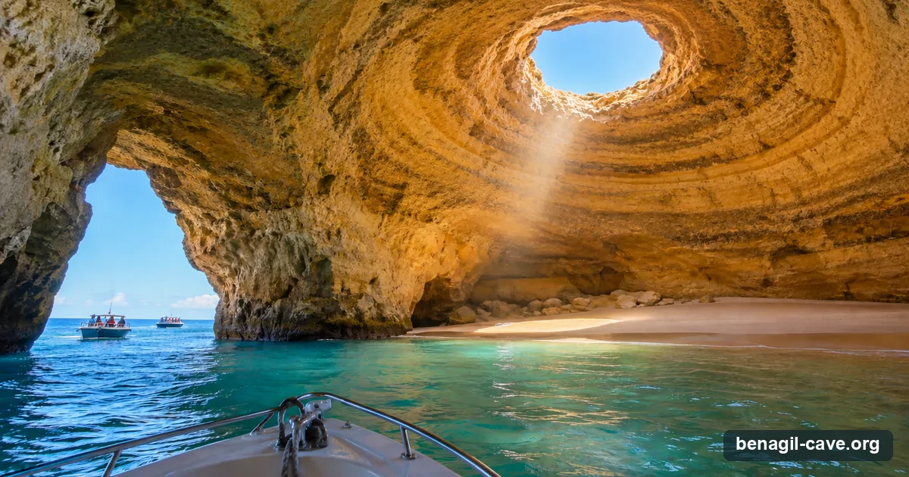
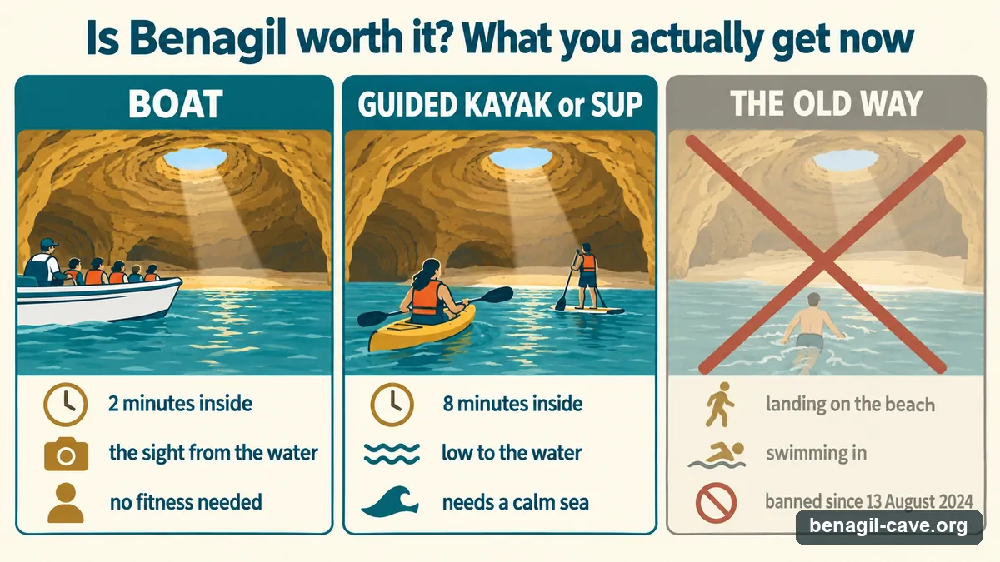

It's the most photographed spot in the Algarve — which is exactly why the question is worth asking. And since 2024 the answer has changed: you can no longer land on the beach inside, or swim in. So is it still worth your morning and your money? Here's the honest take.
Independent picks · Bookings via GetYourGuide (we may earn a commission) · Updated 12 September 2026

What a boat visit is now: two minutes at the arch, an empty beach nobody may land on, and the next boat waiting.
Start Here
What's actually changed
For years, the Benagil fantasy was simple: paddle or swim in, stand on the hidden golden beach, look up through the eye to the sky. That picture is now out of date. Under the rules in force since August 2024 (amended July 2025), you cannot disembark on the interior beach, you cannot swim or float into the cave, and motorised boats may only slip inside for two minutes. A guided kayak or SUP group gets up to eight.
So the honest framing isn't "is the cave amazing" — it plainly is — but "is the cave, seen from the water for a few minutes, sharing it with other boats, worth the trip?" For most people the answer is still yes. But it depends entirely on what you're expecting.
The disappointment you read in newer reviews is almost never about the cave. It's about the gap between the old swim-in, stand-on-the-sand photos people booked for and the brief from-the-water reality they got. Close that gap before you go, and Benagil delivers.
Why the verdict splits
The Verdict
Worth it, if you're this traveller

Set the expectation before you book: it is a from-the-water visit, and the paddle is the long one.
You're here for the sight, not the swim
If seeing the oculus and the turquoise glow from the water is the goal, it's spectacular and absolutely worth it. The cave photographs beautifully from a boat or kayak.
You'll go early or late
The first departures (~07:30–09:00) and late afternoon give you soft light, calmer water and the cave nearly to yourself. Off-peak, the magic is intact.
You're combining it with the coast
As one stop on a coast-and-caves or cave-and-dolphins trip, Benagil is a brilliant highlight. Built into a longer outing, the short cave time stops mattering.
You'll paddle in
A guided kayak or SUP gets you low to the water, four times longer inside than a boat (eight minutes against two), and a far more intimate experience than peering from a crowded deck. The connoisseur's choice.
Temper your expectations, if…
You pictured standing on the beach
That's no longer possible for anyone. If the inside-the-cave beach photo is the whole reason you're going, you'll feel short-changed — adjust the dream first.
You can only go midday in August
Peak hour, peak month is the worst combination: several tour boats jostling in the entrance, hot sun, and your two minutes shared with a crowd. Go another time if you can.
You're prone to seasickness
The Atlantic off Benagil can be lumpy, especially on faster speedboats and longer crossings from Lagos or Albufeira. Pick a calm day and a bigger, slower boat.
Your only window has big swell
If the sea is up (over ~1.5 m), the cave closes and even nearby coast trips get rough. A swell-bound visit isn't worth forcing — check conditions, keep the date flexible, and book something with free cancellation.
Our verdict: Benagil is still one of the most extraordinary sights on the Iberian coast, and worth visiting — if you go in knowing it's a short, from-the-water experience, pick a calm day, and avoid the midday-August scrum. Treat the no-landing rules as a feature, not a loss: they exist because too many people were getting hurt, and a calmer cave is a better one.
Book
If you're going, this is the trip we'd book
From Carvoeiro: Benagil Caves and Praia da Marinha Boat Trip — 4.9★ from 1,288 reviews, from $41, free cancellation.
Prefer to paddle in, or leave from a specific town? The operator comparison lists every option with live dates, by town and craft.
How To
Five ways to make it worth it
One-way sea times, approximate. The closest launches spend the most of your trip at the cave.
Go on the first or last departure — soft light, calm water, and the cave nearly empty.
Pick a calm-sea day. Swell decides everything; check the live sea conditions before you commit.
Leave from Carvoeiro or Armação de Pêra for the most cave time per euro (15–25 minutes out).
Take a kayak or SUP if you're able — it's the closest, longest, most personal way in.
Make it a longer trip — pair the cave with the wider grotto coast and dolphins so the short cave visit is the highlight, not the whole thing.
Compare every tour
All 15 direct operators plus the tours you can book online with live dates — by town, price, craft, cave time and licence.
For most people, yes. From the water, with light falling through the oculus, it's one of the most striking sea caves anywhere. But set expectations: it's a short visit, it can be crowded, and you can no longer land inside or swim in.
No. Since the 2024 rules, disembarking on the interior beach is banned for everyone, and you can't swim or float in. You experience the cave from the water — by boat or guided kayak/SUP.
Not long. Motorised boats are limited to two minutes inside; a guided kayak or SUP group gets up to eight. The cave is the highlight of a 1–3 hour trip, not somewhere you linger.
Go early or late to dodge the crowds, pick a calm-sea day, leave from Carvoeiro or Armação de Pêra for more cave time, or take a guided kayak/SUP to get low to the water and the longer eight-minute window. Combine it with the coast and dolphins for a fuller trip.
Other ways to see the cave, live
Kayak and SUP tours, catamarans with dolphins, sunset runs and private boats from every town on the coast — GetYourGuide's live list with real-time dates and free cancellation on most options.